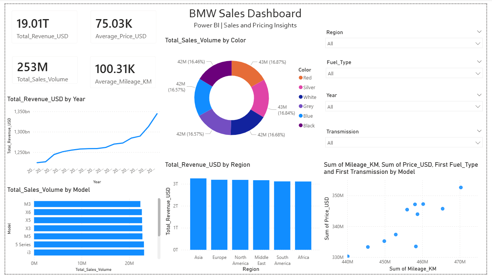

BMW Sales Performance Dashboard (2010–2024)
Tools: Power BI
Overview
Built an interactive dashboard to analyze BMW sales performance by year, region, and model.
The report highlights revenue trends, top-selling models, and pricing insights.
Key Metrics
- Total Revenue (Price_USD × Sales_Volume)
- Total Sales Volume
- Average Price
- Average Mileage
Dashboard Screenshot

Links
← Back to Projects